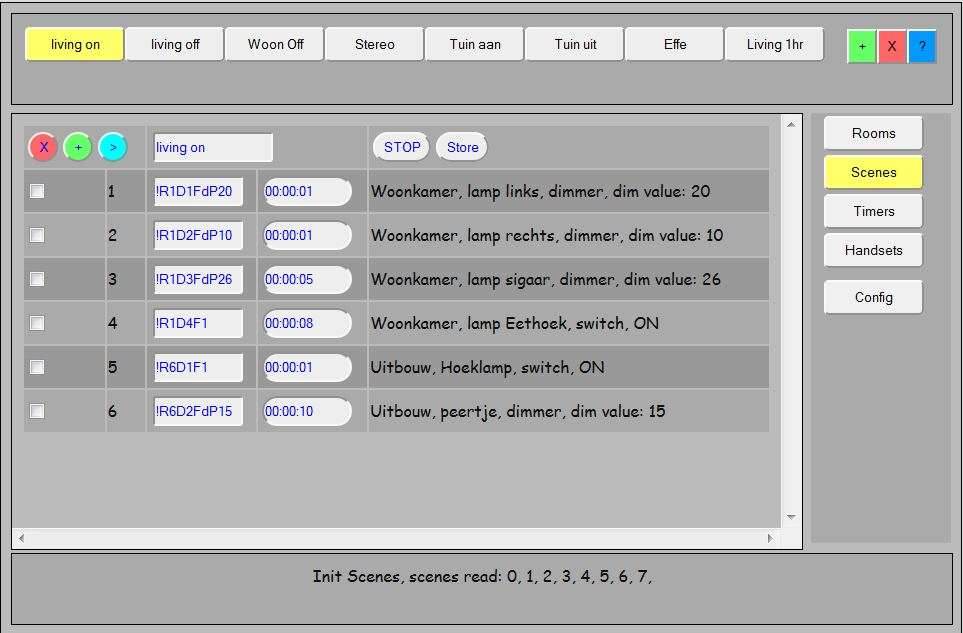

Scenes screen
This part of the documentation describes the scenes screen and what you can (and sometimes cannot) do with scenes.

Adding a Scene to LamPI
Deleting a Scene from LamPI
Adding a Device Action to a Scene
Changing Device Action of a Seene
Changing Timing parameter of a Scene